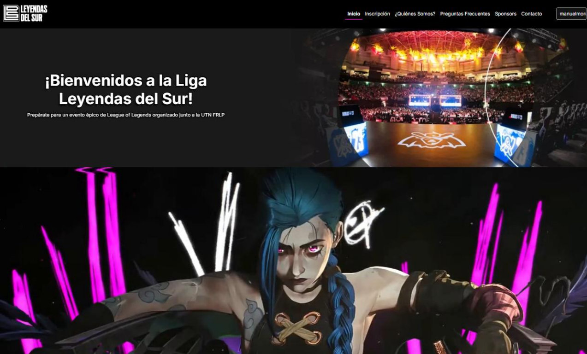
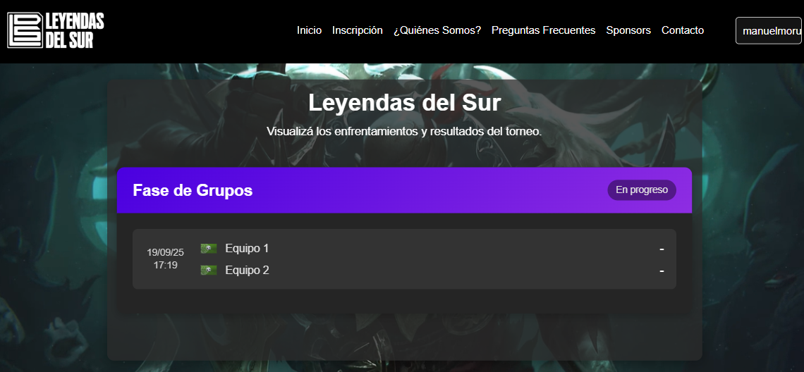
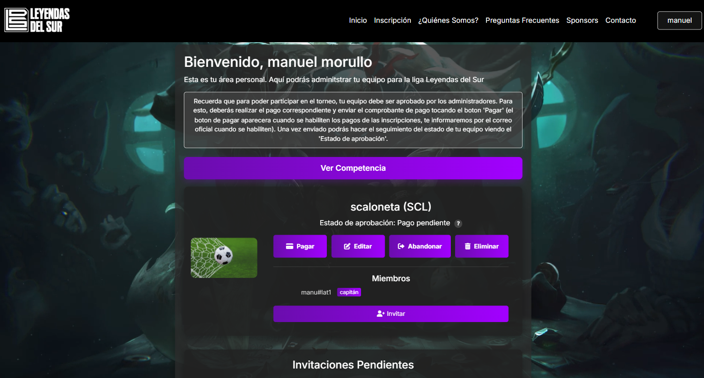
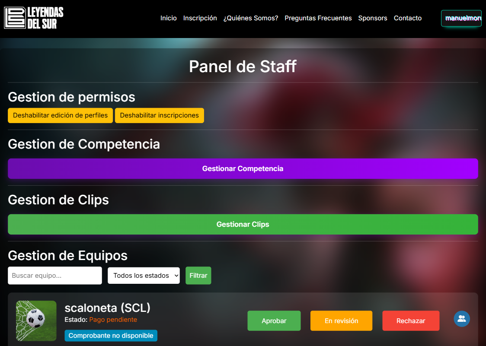
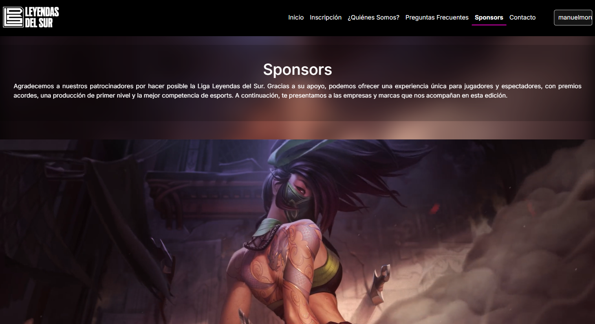

Plataforma integral para gestión de torneo de esports universitaria, presentada como Práctica Profesional Supervisada (PPS).
Nombre del proyecto: Leyendas del Sur
Descripción: Plataforma de gestión, inscripción y seguimiento en tiempo real para torneo de League of Legends.
Tipo: Trabajo de Práctica Profesional Supervisada (PPS) - UTN FRLP
Rol: Desarrollador Full-Stack
Fecha: Marzo - Junio 2025
Tecnologías Usadas: Python (Django), MySQL, JS
Visitar la página Ver códigoEl proyecto consistió en diseñar y construir una Plataforma Integral de Gestión y Promoción para el torneo de League of Legends "Liga Leyendas del Sur" de la UTN FRLP. El desafío principal fue centralizar y automatizar los procesos de organización del torneo: desde la inscripción y el pago de equipos, hasta la generación de los enfrentamientos y el seguimiento de los resultados en tiempo real.
Trabajé directamente con el equipo organizador para definir los requisitos. Priorizamos tres áreas clave:
Construí una aplicación web completa que facilita la inscripción y gestión de equipos, el manejo de comprobantes de pagos, y el seguimiento en tiempo real de los resultados. Para la organización, la plataforma ofrece herramientas para generar y actualizar los enfrentamientos de manera eficiente, sirviendo también como canal de difusión principal.
Sistema completo para creación de equipos, invitación de jugadores y validación de inscripciones de forma ágil.
Generación y visualización automática de cuadros de torneo, cruces y llaves de eliminación directa.
Actualización en tiempo real de los resultados de las partidas, estadísticas y avance general del torneo.
Herramientas administrativas para el control de pagos, moderación de perfiles y configuración global del evento.
Inscripciones y participación sin barreras físicas.
Gestión centralizada de cruces, llaves y brackets.
Validación ágil de comprobantes de inscripción.
Actualización inmediata de resultados y estadísticas.




